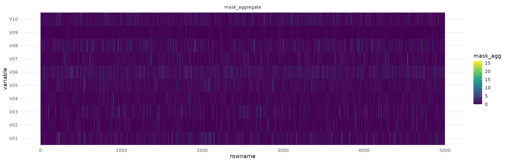
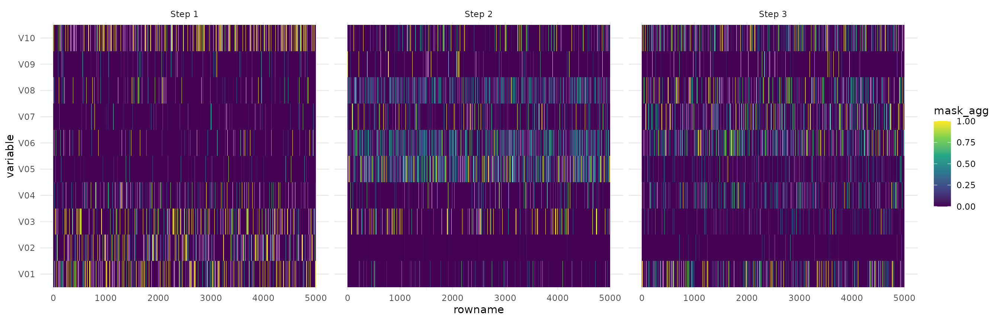

Interpretation tools
interpretation.Rmd
library(tabnet)
library(tidyverse, warn.conflicts = FALSE)
#> ── Attaching packages ─────────────────────────────────────── tidyverse 1.3.0 ──
#> ✔ ggplot2 3.3.3 ✔ purrr 0.3.4
#> ✔ tibble 3.0.4 ✔ dplyr 1.0.2
#> ✔ tidyr 1.1.2 ✔ stringr 1.4.0
#> ✔ readr 1.4.0 ✔ forcats 0.5.0
#> ── Conflicts ────────────────────────────────────────── tidyverse_conflicts() ──
#> ✖ dplyr::filter() masks stats::filter()
#> ✖ dplyr::lag() masks stats::lag()
set.seed(1)
torch::torch_manual_seed(1)TabNet claims to be a interpretable model because the underlying neural network architecture uses feature selection masks that can help identifying which features were used in each step.
The paper also defines an aggregated measure that combines the masks of each step into a single measure.
Note that the selection of important features in the masks is done instance-wise, thus you can identify for each observation which were relevant features.
Experiments
In order to show how to use the interpretation tools of tabnet we are going to make 2 experiments using synthetic datasets very similar to those that were used in the paper.
Datasets
First, let’s define the functions that we will use to generate data:
make_syn2will generate a dataset with 10 columns, but only the 3-6 columns are used to calculate theyresponse vector. This is similar to Syn2 in the paper.make_syn4will generate a dataset with 10 columns too. The response vector depends on the 10th columns: if the value is greater than 0, then we use the 1-2 columns to compute the logits, otherwise we use the 5-6 columns.
logit_to_y <- function(logits) {
p <- exp(logits)/(1 + exp(logits))
y <- factor(ifelse(p > 0.5, "yes", "no"), levels = c("yes", "no"))
y
}
make_random_x <- function(n) {
x <- as.data.frame(lapply(1:10, function(x) rnorm(n)))
names(x) <- sprintf("V%02d", 1:10)
x
}
make_syn2 <- function(n = 10000) {
x <- make_random_x(n)
logits <- rowSums(x[,3:6])
x$y <- logit_to_y(logits)
x
}
make_syn4 <- function(n = 10000) {
x <- make_random_x(n)
logits <- ifelse(
x[,10] > 0,
rowSums(x[,1:2]),
rowSums(x[,5:6])
)
x$y <- logit_to_y(logits)
x
}Now let’s generate the datasets:
syn2 <- make_syn2()
syn4 <- make_syn4()Syn2
Let’s fit a TabNet model to the syn2 dataset and than analyze the interpretation metrics.
fit_syn2 <- tabnet_fit(y ~ ., syn2, epochs = 10, verbose = TRUE)
#> [Epoch 001] Loss: 0.820546
#> [Epoch 002] Loss: 0.533757
#> [Epoch 003] Loss: 0.443653
#> [Epoch 004] Loss: 0.373786
#> [Epoch 005] Loss: 0.301538
#> [Epoch 006] Loss: 0.233970
#> [Epoch 007] Loss: 0.204033
#> [Epoch 008] Loss: 0.178630
#> [Epoch 009] Loss: 0.155728
#> [Epoch 010] Loss: 0.147667In the feature importance plot when can see that as expected V03-V06 features are by far the most important ones.
vip::vip(fit_syn2) Now let’s visualize the aggregated masks plot. In this figure we see each observation in the x axis and each variable in the y axis the colors represent the importance of the feature to predict the value for each observation.
Now let’s visualize the aggregated masks plot. In this figure we see each observation in the x axis and each variable in the y axis the colors represent the importance of the feature to predict the value for each observation.
library(tidyverse)
ex_syn2 <- tabnet_explain(fit_syn2, syn2)
ex_syn2$M_explain %>%
mutate(rowname = row_number()) %>%
pivot_longer(-rowname, names_to = "variable", values_to = "m_agg") %>%
ggplot(aes(x = rowname, y = variable, fill = m_agg)) +
geom_tile() +
scale_fill_viridis_c() We can see that the region between the V03 and V06 concentrate most of the higher intensity colors and the other variables are close to 0. This is expected because those are the variables that we considered when building the dataset.
Next, we can visualize the attention masks for each step in the architecture.
ex_syn2$masks %>%
imap_dfr(~mutate(
.x,
step = sprintf("Step %d", .y),
rowname = row_number()
)) %>%
pivot_longer(-c(rowname, step), names_to = "variable", values_to = "m_agg") %>%
ggplot(aes(x = rowname, y = variable, fill = m_agg)) +
geom_tile() +
scale_fill_viridis_c() +
facet_wrap(~step) We see that the first step captures a lot of noise, but the other 2 steps focus specifically in the important features.
Syn 4
Now let’s analyze the results for the Syn4 dataset. This dataset is a little more complicated for TabNet because there’s a strong interaction between the variables. Depending on V10, different variables are used to create the response variable and we expect to visualize this in the masks.
First we fit the model for 10 epochs.
fit_syn4 <- tabnet_fit(y ~ ., syn4, epochs = 10, verbose = TRUE)
#> [Epoch 001] Loss: 0.802401
#> [Epoch 002] Loss: 0.591248
#> [Epoch 003] Loss: 0.531086
#> [Epoch 004] Loss: 0.465337
#> [Epoch 005] Loss: 0.408927
#> [Epoch 006] Loss: 0.366301
#> [Epoch 007] Loss: 0.327295
#> [Epoch 008] Loss: 0.272445
#> [Epoch 009] Loss: 0.235137
#> [Epoch 010] Loss: 0.214474In the feature importance plot we have as expected, strong importance in V10, and the other features that are used conditionally - V01-V02 & V05-V06.
vip::vip(fit_syn4)
Now let’s visualize the attention masks. Notice that we arranged the dataset by V10 so we can easily visualize the interaction effects.
We also trimmed the 99th percentile so the colors shows the importance even if there are strong outliers.
ex_syn4 <- tabnet_explain(fit_syn4, arrange(syn4, V10))
q99 <- function(x) quantile(x, probs = 0.995)
ex_syn4$M_explain %>%
mutate(rowname = row_number()) %>%
pivot_longer(-rowname, names_to = "variable", values_to = "m_agg") %>%
mutate(m_agg = ifelse(m_agg > q99(m_agg), q99(m_agg), m_agg)) %>%
ggplot(aes(x = rowname, y = variable, fill = m_agg)) +
geom_tile() +
scale_fill_viridis_c() From the figure we see that V10 is important for all observations. We also see that for the first half of the dataset V05 and V06 is the most important feature, for the other half, V01 and V02 are the important ones.
From the figure we see that V10 is important for all observations. We also see that for the first half of the dataset V05 and V06 is the most important feature, for the other half, V01 and V02 are the important ones.
We can also visualize the fast at each step in the architecture.
ex_syn4$masks %>%
imap_dfr(~mutate(
.x,
step = sprintf("Step %d", .y),
rowname = row_number()
)) %>%
pivot_longer(-c(rowname, step), names_to = "variable", values_to = "m_agg") %>%
group_by(step) %>%
mutate(m_agg = ifelse(m_agg > q99(m_agg), q99(m_agg), m_agg)) %>%
ungroup() %>%
ggplot(aes(x = rowname, y = variable, fill = m_agg)) +
geom_tile() +
scale_fill_viridis_c() +
facet_wrap(~step)
We see that Step 1 and 3 both focus on V10, but on different features depending on V10. Step 2 seems to have found some noise in V08, but also focus strongly on V01-V02 and V05-V06.